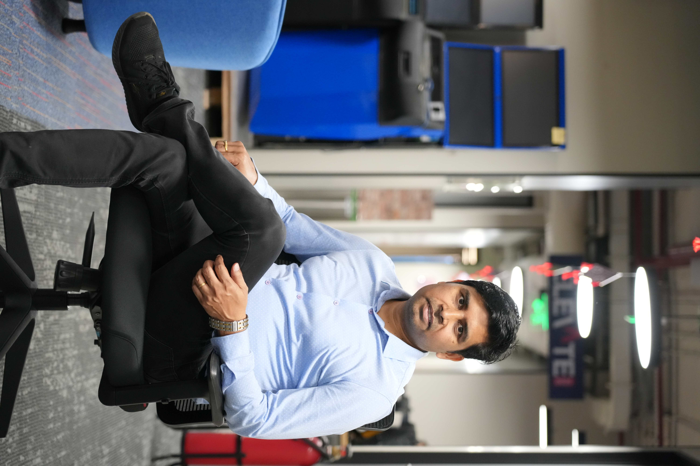

AWS · Kubernetes · RKE2 · Docker · Terraform · Helm · Rancher · Argo CD

BENGALURU · OPEN TO SENIOR ENGINEERING LEADERSHIP
I build reliable platforms.
I lead teams that deliver.
Technology leader with 17+ years across Platform Engineering, SRE, DevOps, enterprise integration and production operations — connecting hands-on engineering depth with customer and business outcomes.
Engineering Manager • Platform Engineering • SRE / DevOps Leadership • Cloud Architecture • Production Operations
01 / IMPACT
Leadership backed by production outcomes.
17+Years in technology
99.99%Availability environment
10Kubernetes clusters
10Global client deliveries
5–7Engineers led / mentored
15%Automation time saved
02 / EXPERTISEEngineering depth.
Engineering depth.
Operational discipline.
Leadership perspective.
Jenkins · GitLab · Bitbucket · Ansible · JFrog · CI/CD · Infrastructure as Code
SRE · HA/DR · Incident Management · RCA · Grafana · ELK · Datadog · OpenTelemetry
Team leadership · Client delivery · Enterprise integration · Mentoring · CAB / ITIL-aligned operations
Java · Python · Shell/Bash · REST APIs · Kafka working knowledge · distributed systems
Technology strategy · execution · corporate finance · stakeholder alignment · IIM Kozhikode executive education
03 / JOURNEY
From software engineering to platform leadership.
2021 — PRESENT
OpenBet Engineering / Integration Leadership
Lead engineers delivering global client integrations and production platforms across Europe, Canada and the US. Own delivery across Product, QA and Infrastructure, with focus on AWS/Kubernetes, CI/CD automation, high availability, scalability, observability and production reliability.
2019 — 2021
PAYBACK Application Support & Reliability
Led technical support and production reliability improvements for loyalty platforms. Built observability and troubleshooting practices, including log-analysis automation that cut detection of abnormal application-layer traffic from 45+ minutes to under 60 seconds.
2014 — 2019
State Street / SSGA Technical Lead
Led 6–7 engineers supporting institutional, ETF and mutual-fund web platforms across global regions. Strengthened monitoring, incident response, automated file delivery, release governance and DR/BCP readiness in financial services.
2009 — 2014
Hewlett Packard Java Software Designer / Application Support
Built and supported enterprise Java applications using Core Java, Struts and WebLogic for clients including General Motors and Vodafone UK, progressing from development into application maintenance, RCA and production support.
04 / LAB
I stay hands-on.
Selected architecture and learning projects that demonstrate how I think, build and explain complex platforms.
PLATFORM ARCHITECTURE
RKE2 Architecture Explorer
AWS-hosted Kubernetes architecture, upstream/downstream clusters, NLB and gateway patterns.
Explore repository → DELIVERY ENGINEERINGCI/CD Pipeline Explorer
End-to-end pipeline thinking across source, build, artifacts, containers, Helm, Kubernetes and GitOps.
Explore repository → INFRASTRUCTURE AS CODECloudify IaC
Terraform, AWS platform standardization and production-oriented infrastructure engineering exercises.
Explore repository → AI + OPERATIONSAI Learning & Operations Lab
Practical AI learning modules focused on applying AI to DevOps, SRE, platform engineering, automation and modern engineering workflows.
Explore AI lab →05 / EDUCATION
Engineering + strategy.
IIM Kozhikode
Executive Course — Strategic Management · 2025–2026
BITS Pilani
M.Tech — Software Systems · 2013–2015
Sathyabama University
Engineering — Electronics & Control · 2004–2008